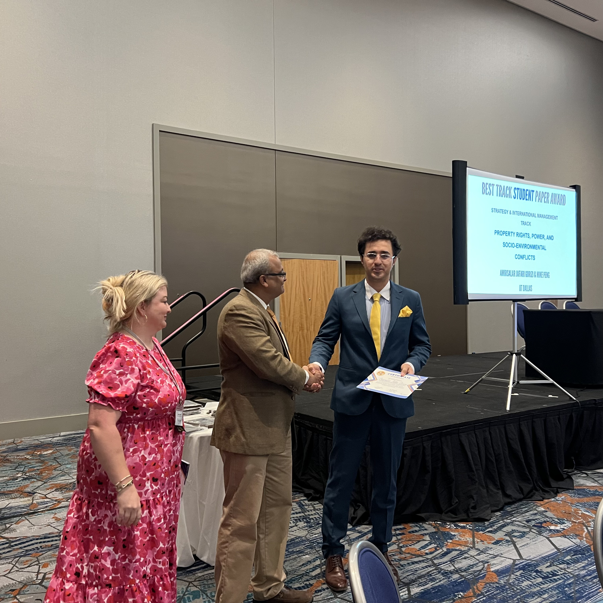
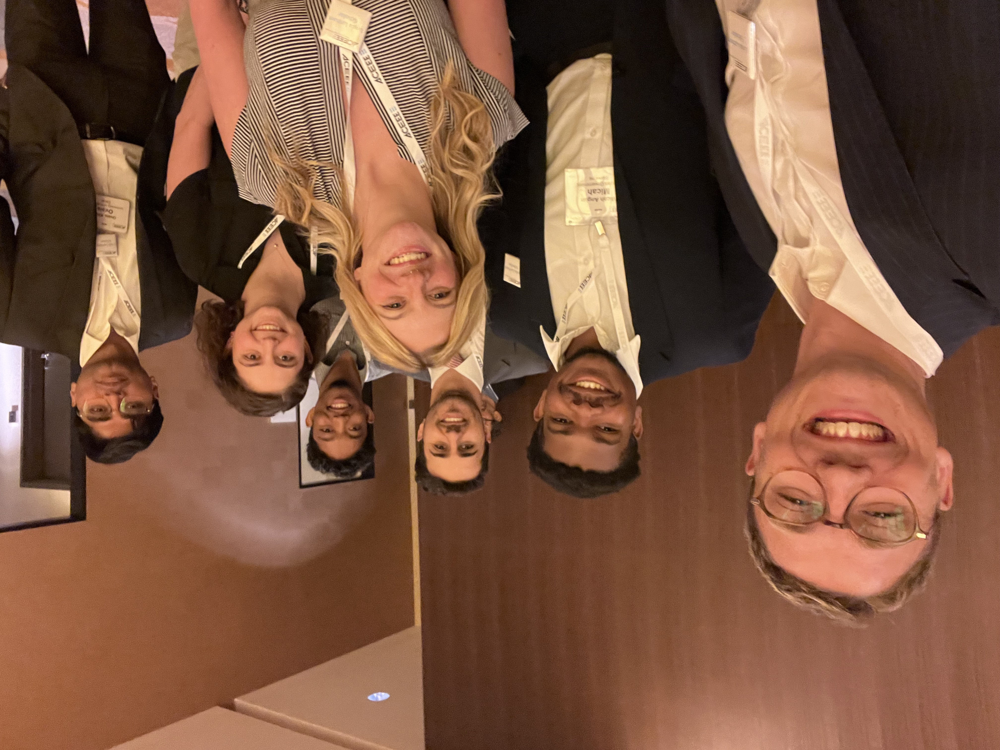

2025 (Oct): Nominated for the Best PhD Paper Award, Strategic Management Society Conference, San Francisco, CA.
2025 (May): Top Student Paper Award, Eastern Academy of Management, Baltimore, MD.
2023: Linda Latham Scholarship (ACEEE), Industry Summer Study, Detroit, MI, one of seven recipients worldwide.


English (advanced), French (intermediate)
Excel, PowerPoint, Power BI, Tableau, R, ArcGIS Pro, GEE
Jamovi, R, SPSS, STATA, Python, STAN
Deconstruction, historical discourse analysis, machine learning, deep learning, NLP, LLMs
Co-interviewed authors for the ASQ Blog on their Administrative Science Quarterly paper: "If I Could Turn Back Time" ↗
Total conducted peer reviews: 40+
Southern Management Association Conference, 2026
Eastern Academy of Management Conference, 2026
Journal of Business Venturing
Academy of International Business Conference, 2025
Academy of Management Conference, 2025
Academy of Management Conference, 2024
Cross Cultural & Strategic Management
Energy Strategy Reviews
World Development Sustainability
Sustainable Production and Consumption
Sustainable Manufacturing and Service Economics
Papers in Applied Geography
Technology in Society
The Third Bridging Transportation Researchers (BTR) Conference, 2021